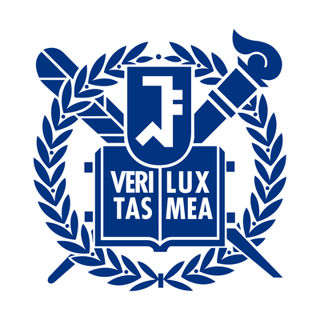
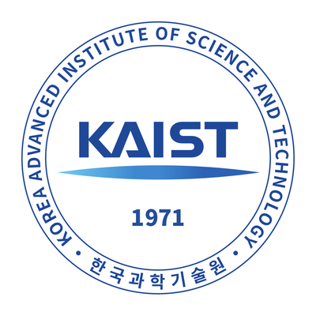
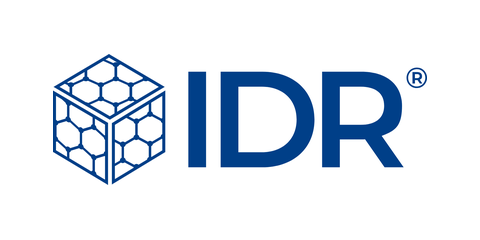
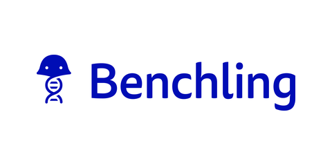
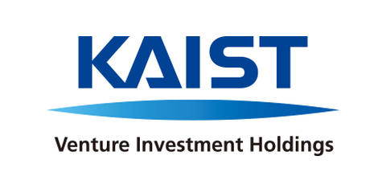
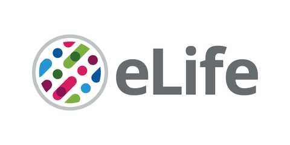
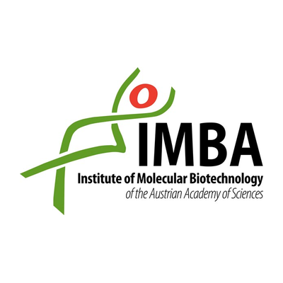
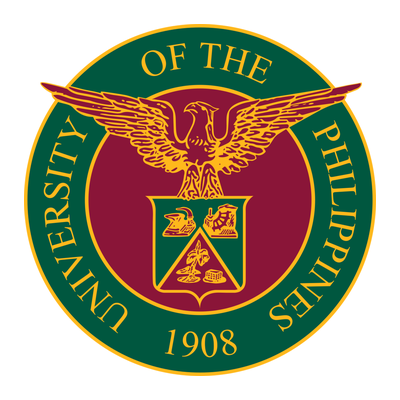

CV
Education 🎓

Seoul National University
PhD candidate, Veterinary Biomedical Sciences
KAIST
BSc Biological Sciences, minor in Science & Technology PolicyConsultation 🤝
I am available for scientific consultation with industry. Past engagements include advising pharma and biotech clients on therapeutics and laboratory equipment markets, a software company on electronic lab management, an instrument maker on bench tools and lab automation, and several startups on organoid technology development. I currently advise an RNA therapeutics startup as an academic collaborator. I was also appointed a community ambassador for the journal eLife.




Research experience 🔬
KAIST2024 -
Visiting Researcher, Department of Biological SciencesSeoul National University2020 - 2024
Graduate Research Associate, College of Veterinary MedicineKAIST2016 - 2020
Undergraduate Researcher, Chemical & Biomolecular Engineering
IMBA, Vienna BioCenter2017
Visiting Research FellowThe University of Tokyo, Komaba2016
Visiting Research FellowKAIST2015
Undergraduate Research Participation, Biological SciencesSeoul National University2013 - 2015
Research Assistant, Colleges of Pharmacy and Veterinary Medicine
University of the Philippines Manila2012
Clinical Assistant, National Institutes of HealthFunding 💰
- SCAID Research Grant Support
- Hyundai Motor Chung Mong-Koo Foundation Graduate Scholarship
- KAIST Long-Term URP Research Grant
- Japan Government Support for Research Training
- KAIST Support for Exchange Program
- KAIST Full Academic Scholarship
- Korean Government Scholarship Program (GKS)
- CHED Philippines Full-Merit Scholarship
Awards 🌟
- Outstanding Graduate Student Research Award, BK21 FOUR
- Best Thesis Presentation, ERD Day, SNU College of Veterinary Medicine (twice)
- Young Scientist Award, KSMCB
- Young Scientist Award, AOHUPO Congress
- Grand Prix, KAIST Undergraduate Research Participation Program
- First Place, KAIST Biotechnology Research Proposal Contest
- Second Place, Alltech Young Scientist Competition, Asia Pacific
- Regional Finalist, Google Science Fair